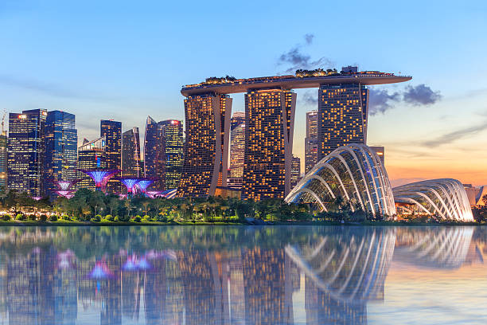

このWebサイトでは、2ヶ月間で行ったシンガポールの観光について紹介します。
シンガポールは、東南アジアに位置する独立した都市国家で、金融・貿易・観光の国際的ハブです。 多民族・多文化が共存し、厳格な治安対策と効率的な都市計画、高い生活水準を特徴とします。
まず、成田空港までジェットスターで移動しました。
シンガポールへは、シンガポール航空のLCCであるscootを利用しました。椅子の質も良く、姿勢は快適に過ごすことができますが、ものすごく寒いので長袖の上着が必須。
合計14万円

NYPは、Nanyang Polytechnicの略で、シンガポールにある大学の前に行く高専の4,5年のような位置づけの学校です。工学、ビジネス、デザイン、情報技術など、多様な分野で専門的な教育を提供しています。

こちらのページをごらんください。